1. Escreva para design.matheusfonseca[@]gmail.com
2. Envie textos, imagens estáticas, imagens animadas, vídeos, sons.
3. O conteúdo deste site é dividido por notas independentes, compostas também por um título e uma menção de autoria. Envie quantas notas quiser.
4. O texto é a forma de visual mais leve para exibição em um navegador web e que possui maior acessibilidade. Portanto, não existe um limite para o tamanho escrito das notas publicadas.
5. Opte por imagens que sejam menores que 1000px, com até 250 kb. Mais do que isso é desnecessário para exibição neste site. Abaixo, na aba Recursos você encontra recursos gratuitos e seguros para otimizar suas imagens.
1. Escreva para design.matheusfonseca[@]gmail.com
2. Envie textos, imagens estáticas, imagens animadas, vídeos, sons.
3. O conteúdo deste site é dividido por notas independentes, compostas também por um título e uma menção de autoria. Envie quantas notas quiser.
4. O texto é a forma de visual mais leve para exibição em um navegador web e que possui maior acessibilidade. Portanto, não existe um limite para o tamanho escrito das notas publicadas.
5. Opte por imagens que sejam menores que 1000px, com até 250 kb. Mais do que isso é desnecessário para exibição neste site. Abaixo, você encontra recursos gratuitos e seguros para otimizar suas imagens.
Aos quinze, aos dezoito, aos vinte e quatro, aos trinta e um.
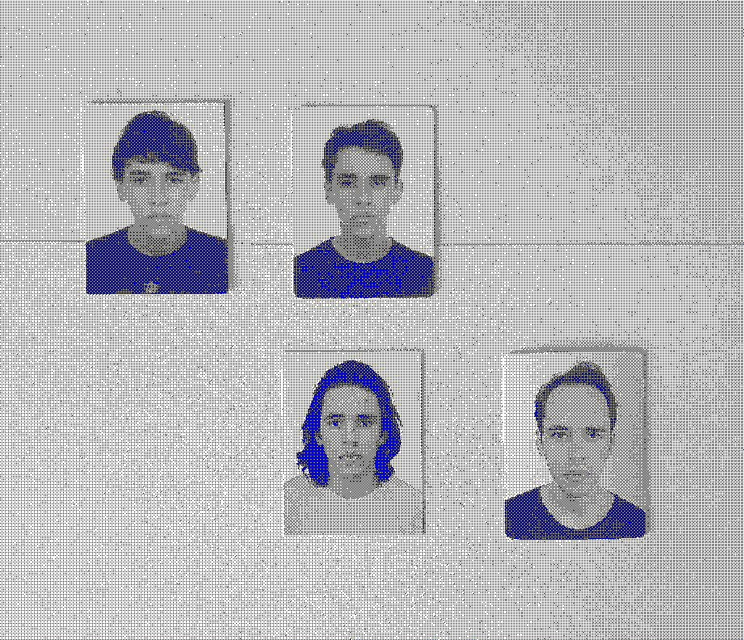
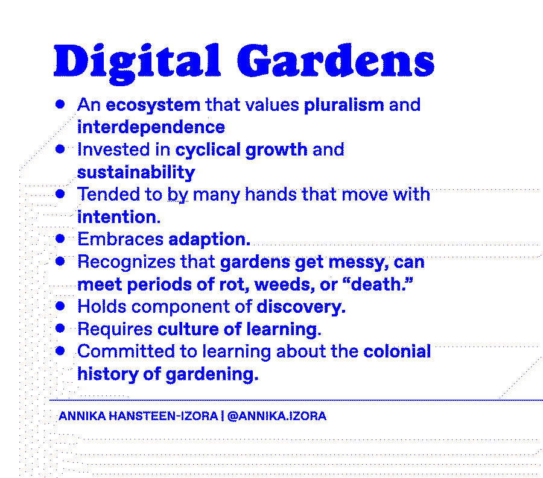
No processo de tradução dos desenhos feitos no papel para o suporte digital, no software de computação gráfica, busco preservar nas formas e esquemas as mesmas regras mecânicas e de espacialidades - para que essa etapa seja uma transposição que aproveita o livre pensar do papel. Por trás disso, pretendo fazer com que a captura de movimento seja clara e pulsante durante essa transposição.
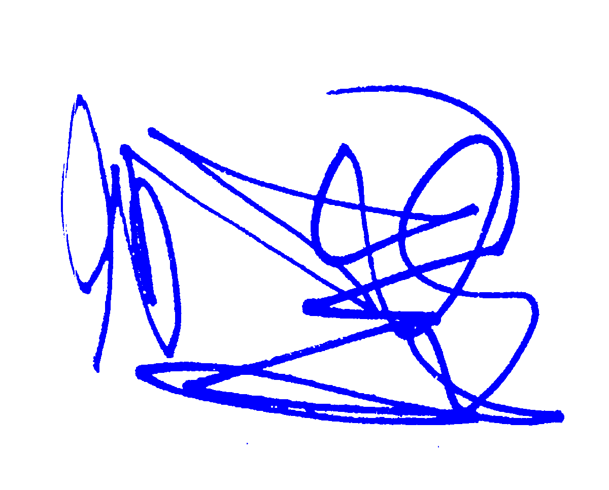
A imagem pobre é uma bastarda ilícita de 5.ª geração da imagem original. A sua genealogia é dúbia e o seu nome deliberadamente mal soletrado. Desafia frequentemente o património, a cultura e o seu próprio copyright. É transmitida como um engano, um artifício, um indício ou uma lembrança da sua forma visual prévia que ridiculariza as promessas da tecnologia digital.
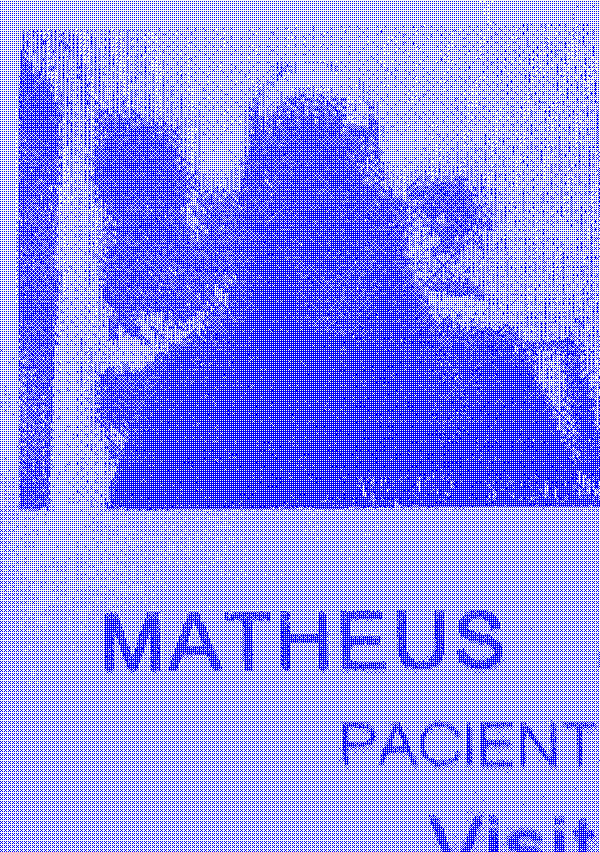
Hoje, a nuvem é a metáfora central da internet: um sistema global de grande potência e energia que ainda assim retém a aura do numemal e do numinoso, algo quase impossível de entender.
É uma insfraestrutura física que consiste em linhas telefônicas, fibra óptica, satélites, cabos no leito oceânico (…) que consomem imensas quantidades de água e energia e que habitam jurisdições nacionais e legais. A nuvem é um novo tipo de indústria, e é uma indústria voraz.
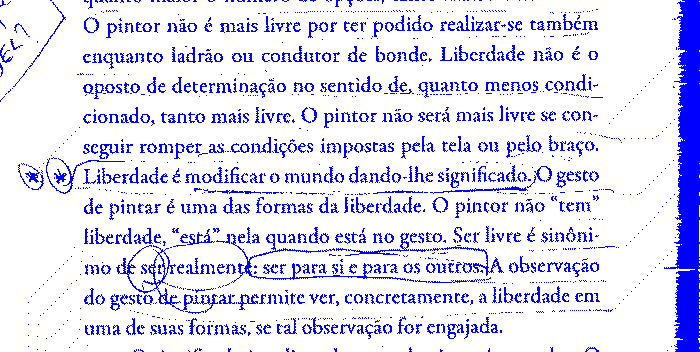
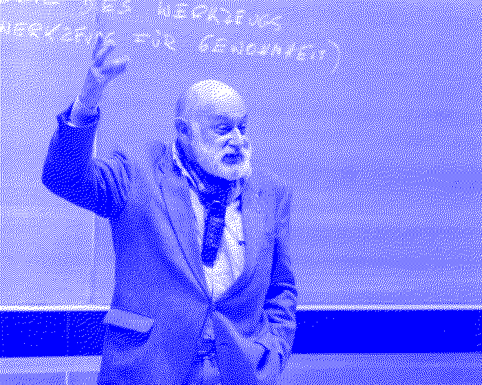
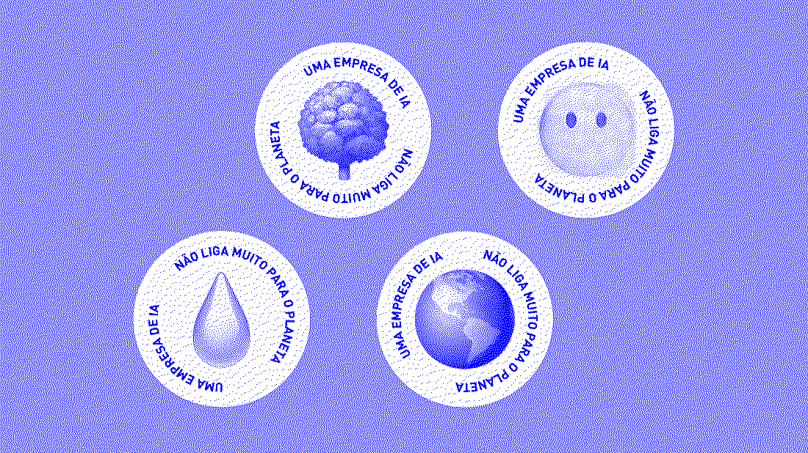
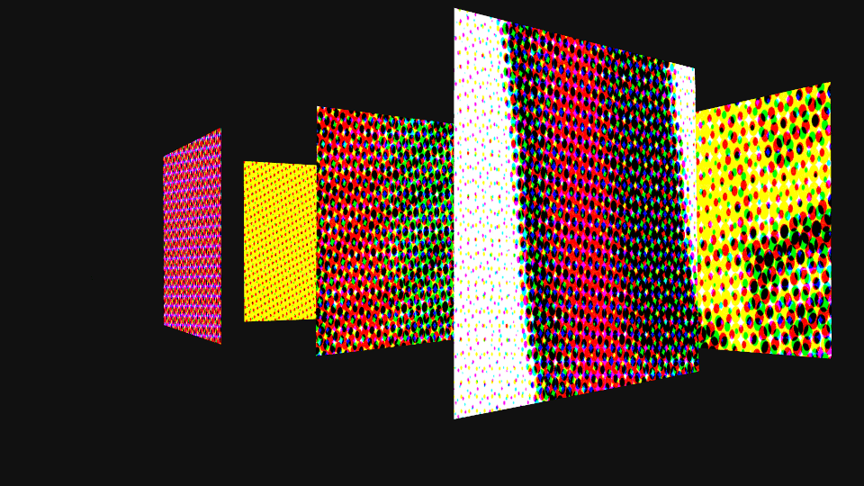
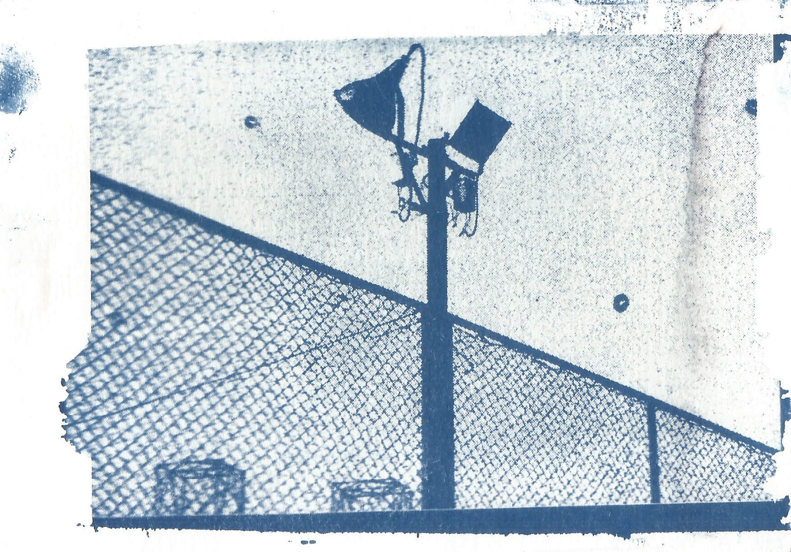
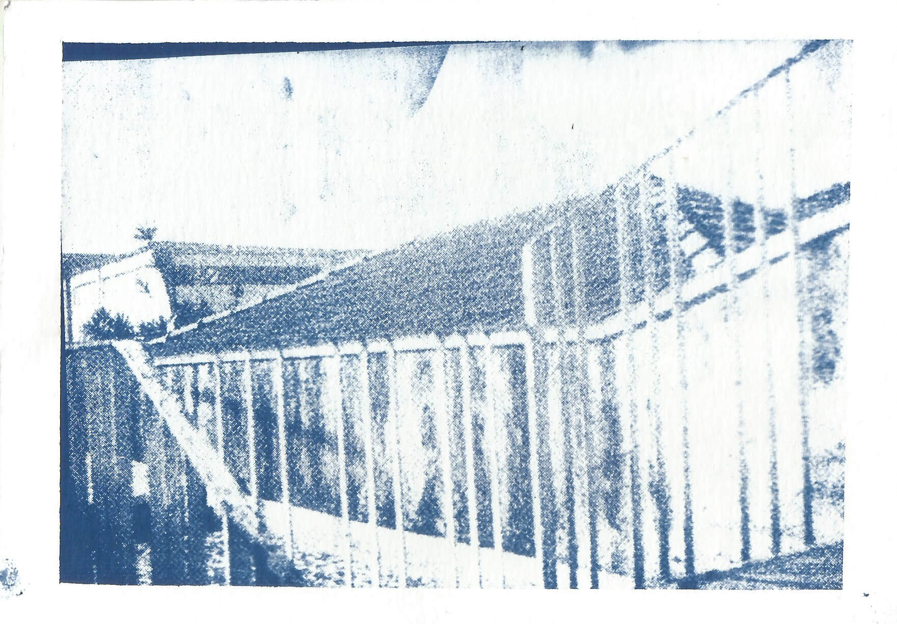
A intenção criativa mantém íntima relação com a escolha da matéria-prima opta-se por uma determinada em detrimento de outras, de acordo com os princípios gerais da tendência do processo.
By default, a website that uses HTML as intended and has no custom styling will be readable on all screens and devices. Only the act of design can make the content less readable, though it can certainly make it more.
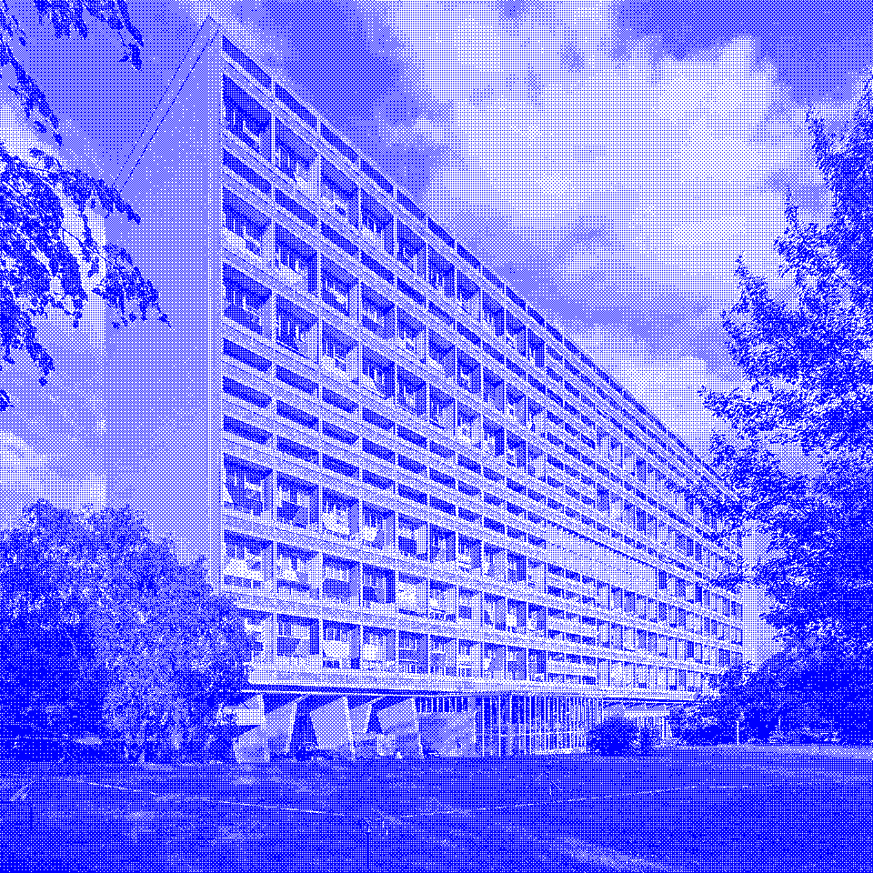
Não existe meio de verificar qual é a boa decisão pois não existe termo de comparação. Tudo é vivido pela primeira vez e sem preparação. Como se um ator entrasse em cena sem nunca ter ensaiado. Mas o que pode valer a vida, se o primeiro ensaio da vida já é a própria vida? É isso que faz com que a vida pareça sempre um esboço.
A Insustentável leveza do ser.
Criar meu web site
Fazer minha home-page
Com quantos gigabytes
Se faz uma jangada
Um barco que veleje
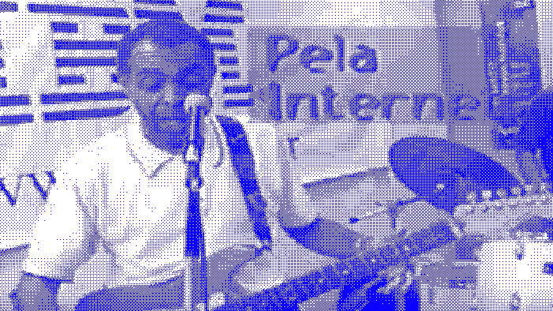
SOBRE O PROJETO
Este site é parte do projeto de TCC do curso de especialização em Processos de Criação, na PUC SP, em 2026.
O curso nasceu do Grupo de Estudos em Processos de Criação, formado em 1993. O Grupo reúne pesquisadores e artistas/pesquisadores que, em uma abordagem transversal, estudam processos com uma diversidade de técnicas e linguagens. Essa atuação atrevessa variadas áreas de expressão, como artes visuais, artes cênicas, literatura, cinema, dança, arte digital, fotografia, jornalismo, publicidade, design, curadoria, crítica de arte e educação. Para saber mais ↗.
Este site foi projetado para minimizar o consumo de energia e recursos para acessá-lo. Os arquivos foram gerados como um site estático, portanto não há base de dados. Não foi utilizado JavaScript, frameworks ou bibliotecas de CSS. Este site também não possui nenhum tipo de ferramenta rastreamento ou armazenamento de dados.
2026